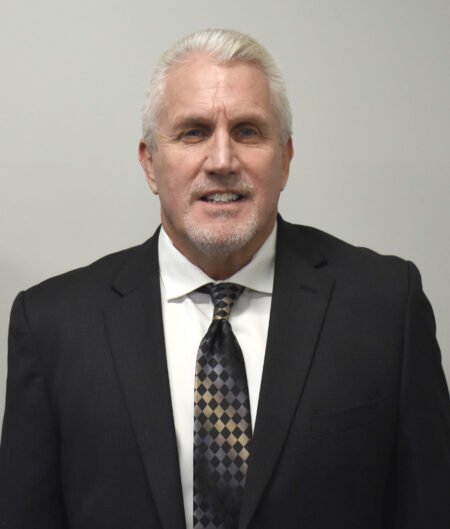
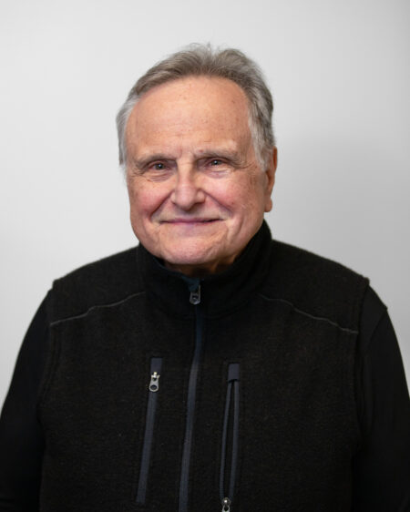

Governance
Board of Directors
Appointed leaders providing strategic oversight and governance for the Authority.

Brad Mullins
Chairman View BioJeff Zellers
Vice Chairman View BioJacqueline Jakacki
Board Member Term: May 2025 – May 2029 View BioHannah Kiraly
Board Member Appointed: May 2022 View BioVassie Scott
Board Member Appointed: February 2021 View BioMichele Silva Arredondo
Board Member Appointed: November 2022 View BioAaron Simmons
Board Member Term: May 2024 – May 2028 View BioJon Veard Jr.
Board Member Appointed: June 2020 View Bio